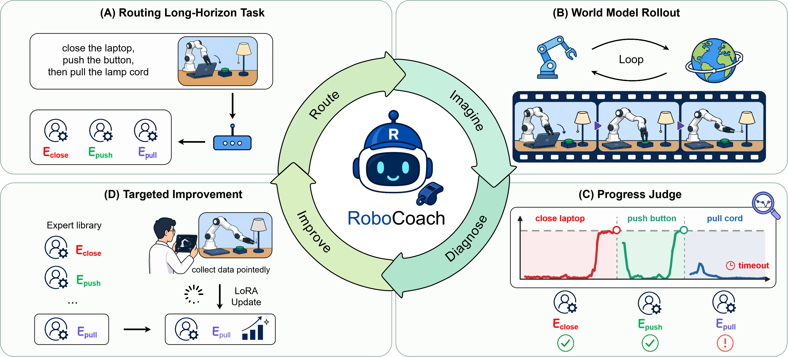
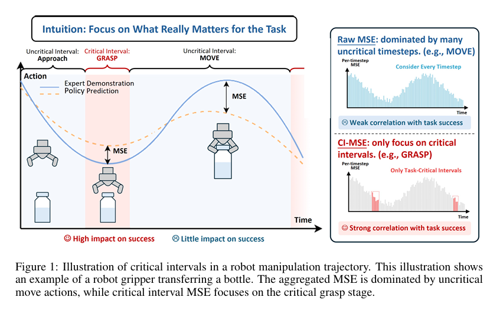

2024 - 2027
Expected graduation
Expected graduation
Tsinghua University
Undergraduate, Department of Automation · Minor in Statistics
GPA 3.99 / 4.0Rank 2 / 170
Department of Automation, Tsinghua University
I am an undergraduate researcher at Tsinghua University, with a minor in Statistics. My research focuses on robot learning, world models, and visual representations.
I study how robots can learn compositional skills efficiently, how we can evaluate policies reliably, and how discrete representations can make better use of their capacity.
Undergraduate, Department of Automation · Minor in Statistics
GPA 3.99 / 4.0Rank 2 / 170

Under review2026 · Co-first author, listed second
World models identify bottlenecks in compositional robot tasks and guide targeted policy improvement.

Under review2026 · Third author
A task-critical offline validation metric for more reliable evaluation of robot manipulation policies.
Research Intern
Contributed to ReAlign, focusing on a failure-learning dataset and failure-detection methods.
Research practice in single-arm and bimanual robot policy training and deployment.
Represented Automation's 2024 cohort at the university Student Congress. Three-Star Volunteer in the Tsinghua Bauhinia Volunteer Program: 130 hours in total, including 72.5 hours in 2025-2026, across competition support, student orientation, academic Q&A, and community service.
Quadruped competition control · May - June 2025.
Excellent course project, Introduction to AI · March - April 2025.
Excellent course project, Introduction to AI · May - June 2025.
I enjoy team activities: our ten-person synchronized rope-skipping team placed first in Group A at the Ma John Cup and third in the Capital Universities competition. I also participate in ice hockey, running, and class theater as a planner and performer, and share my experiences with incoming students.
Member of the Tsinghua Vulcan Team through Phase IV of the Zhuiguang Program.